O sistema de gestão completo para locadoras de caçambas — com a identidade da sua empresa.
Do primeiro contato com o cliente até a nota fiscal. Da programação da entrega ao motorista em campo. Nas próximas páginas você vai conhecer, na prática, as telas que podem se tornar o novo dia a dia da sua operação — construídas sob medida, com a sua marca e as suas regras.
Toda locadora de caçambas conhece o mesmo problema: pedidos no WhatsApp, controle de caçambas em planilha, nota fiscal em outro sistema, financeiro em outro, e o motorista descobrindo o endereço de última hora. O CaçambAI nasceu para acabar com essa fragmentação — atendimento, operação, financeiro, fiscal, controle de resíduos (MTR) e app do motorista, tudo conectado, em um só lugar.
As telas a seguir são reais — fazem parte de um sistema em produção, usado hoje por uma empresa do setor. E esse é o ponto mais importante desta proposta: o seu sistema não será um clone genérico. Ele será construído com a sua marca, suas cores, seu jeito de precificar, seus tipos de caçamba e as regras específicas da sua operação.
Seis pilares que tornam o CaçambAI diferente de um sistema de gestão genérico.
Logotipo, cores, nome da empresa e até as regras de negócio são ajustados para a sua operação. Seu sistema vive em um endereço próprio, ex: suaempresa.cacambai.com.br.
Um pedido criado no atendimento já vira Ordem de Serviço, gera fatura, nota fiscal e MTR — sem digitar a mesma informação duas vezes.
Emissão de NFS-e direto pelo sistema, com status em tempo real junto à SEFAZ, controle de faturas, boletos, PIX e inadimplência.
O motorista recebe a programação do dia, executa a entrega ou retirada e atualiza o status direto do celular — sem ligação para o escritório.
Programação diária em formato kanban por motorista e mapa com a localização e o status de cada caçamba da frota.
Os dados da sua empresa ficam em um ambiente isolado dos demais clientes, com controle de acesso por usuário e por função.
Um passeio pelo dia a dia de quem usa o CaçambAI: do gestor que acompanha tudo pelo painel, ao atendente que abre um pedido, à equipe financeira que cobra e emite notas.
* As telas abaixo usam dados fictícios apenas para ilustração — em produção, cada empresa vê somente as suas próprias informações, com sua marca e seus clientes.
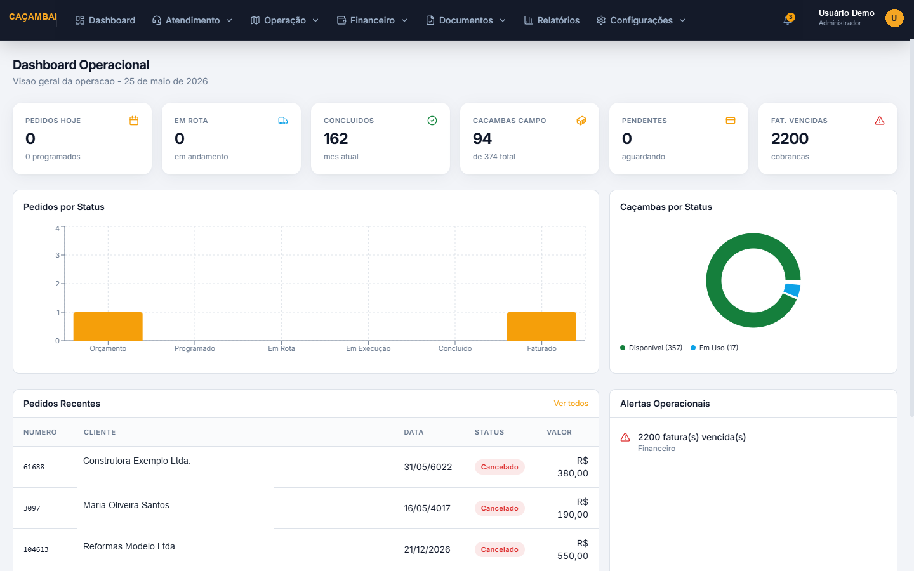
Ao entrar no sistema, o gestor já vê o que importa: quantos pedidos têm hoje, quantas caçambas estão em rota, quantas estão na rua e quais faturas estão vencidas.
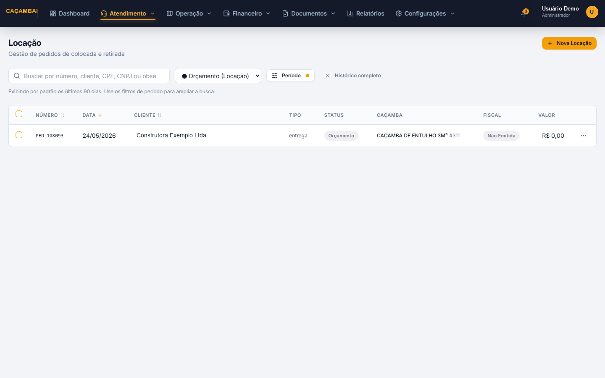
Toda solicitação de caçamba passa por aqui. Uma única tela para acompanhar orçamentos, pedidos programados, em rota, concluídos e faturados.
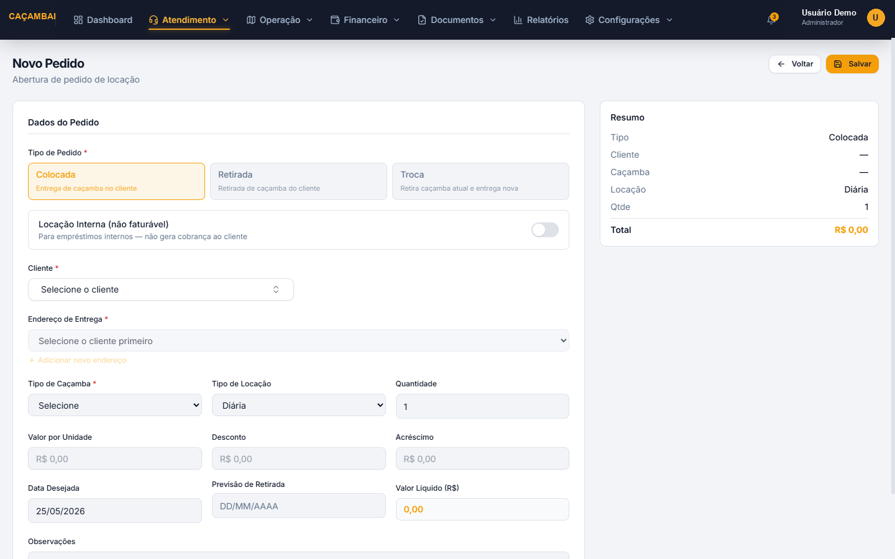
Formulário pensado para a rotina do atendimento: tipo de pedido, cliente, endereço de entrega, tipo de caçamba e tipo de locação — com o valor calculado automaticamente.
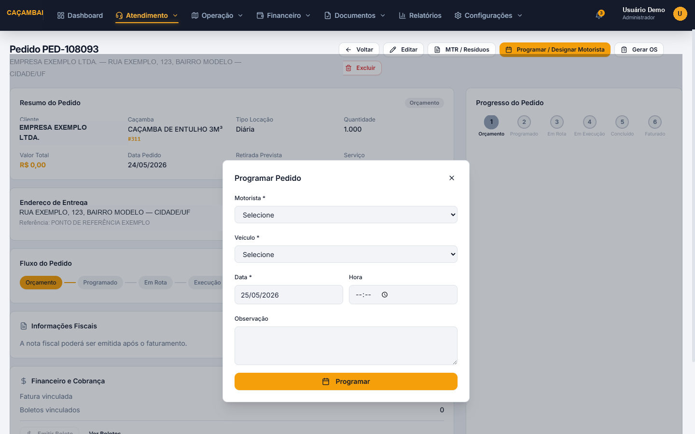
Cada pedido tem uma jornada visual clara: Orçamento → Programado → Em Rota → Em Execução → Concluído → Faturado. Direto dessa tela, o gestor programa motorista e veículo, gera a Ordem de Serviço e acompanha o status fiscal e financeiro.
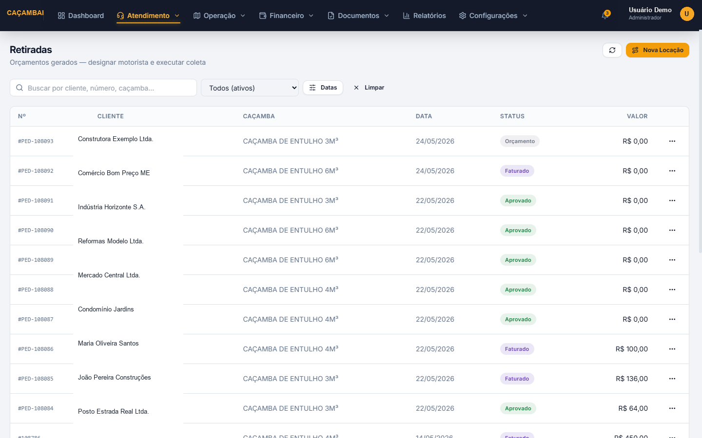
Uma lista dedicada de retiradas: orçamentos e pedidos aguardando recolhimento, com status e valores visíveis de imediato — para o time de operação nunca perder o controle do que precisa voltar para o pátio.
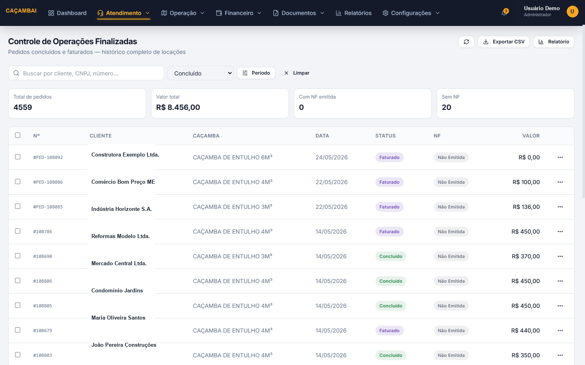
Todas as locações concluídas e faturadas em um único lugar, com totais consolidados e exportação para análise — facilitando a vida da contabilidade e da gestão.
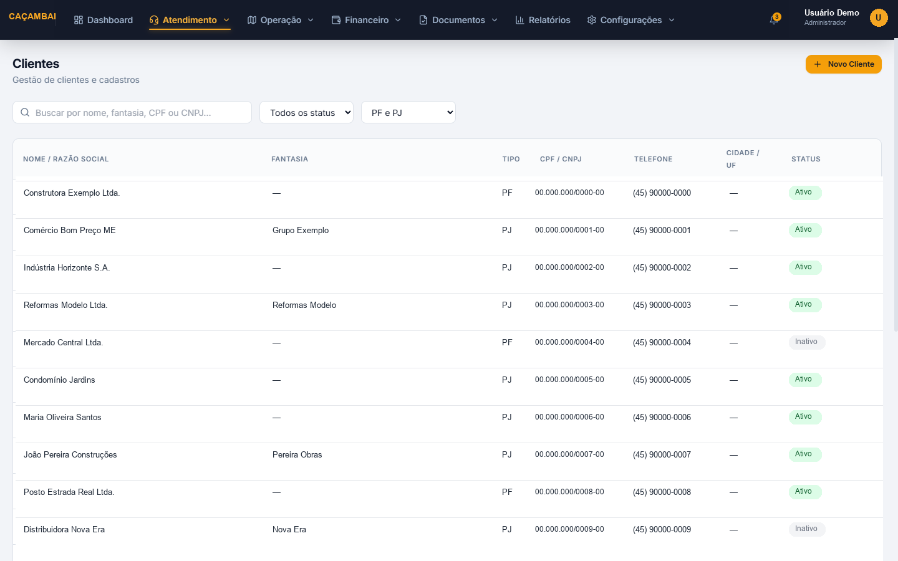
Uma base completa de clientes, com busca por nome, CPF/CNPJ e status. Cada cliente carrega seus endereços de entrega, histórico de pedidos e faturas — tudo conectado.
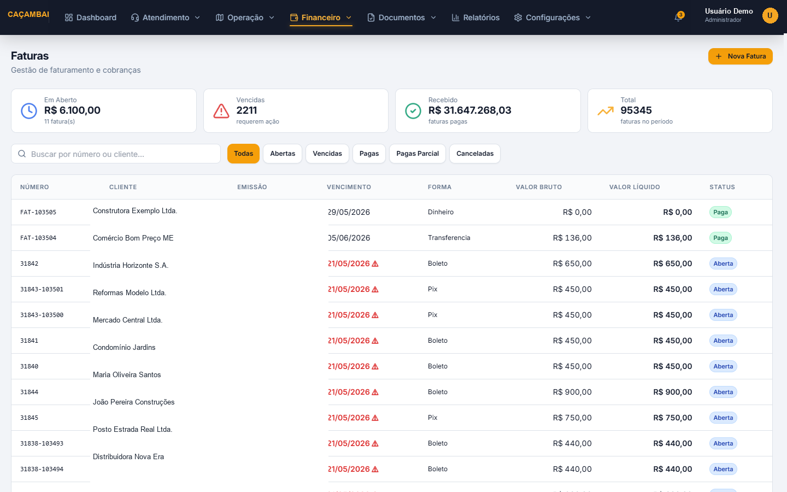
Visão consolidada do financeiro: quanto está em aberto, quanto está vencido, quanto já foi recebido — com filtros por status e forma de pagamento.
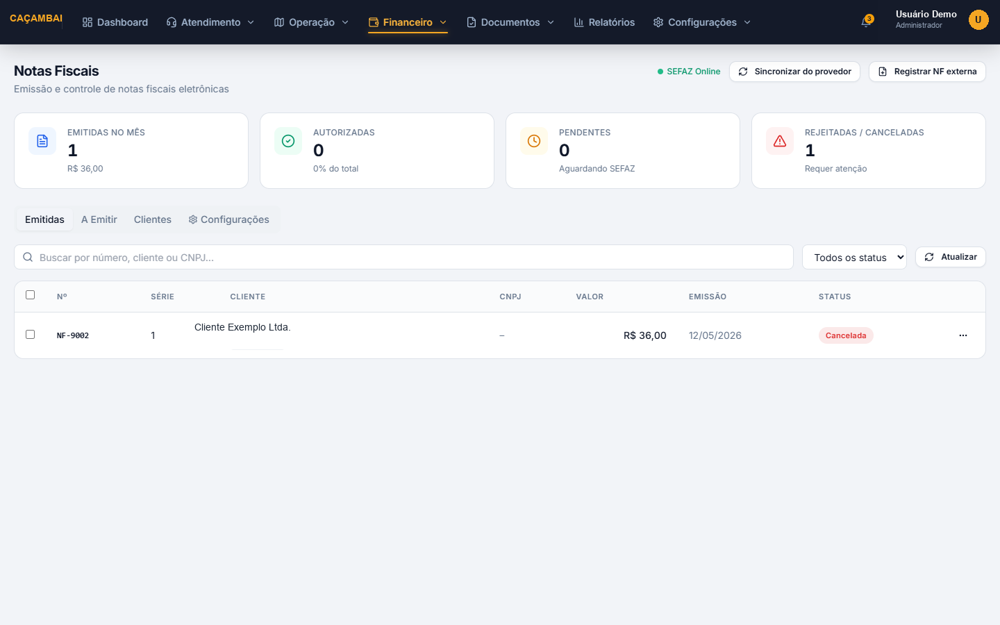
Emissão, cancelamento e consulta de notas fiscais de serviço com status em tempo real junto à SEFAZ — e a possibilidade de registrar notas emitidas fora do sistema, quando necessário.
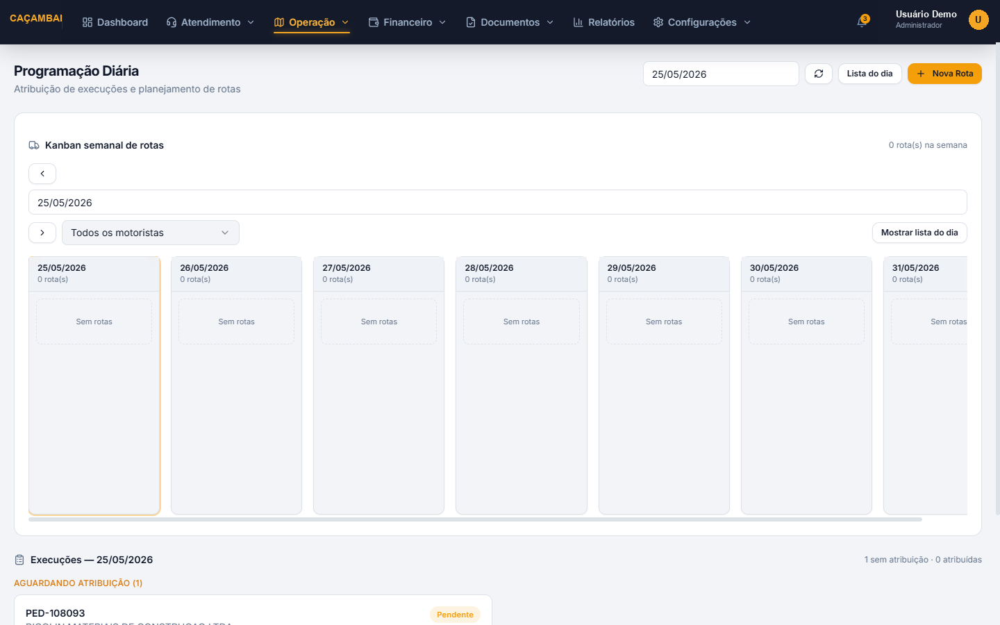
Programação diária com visão semanal: distribua os pedidos entre os motoristas, veja quem está com rota livre e acompanhe as execuções aguardando atribuição.
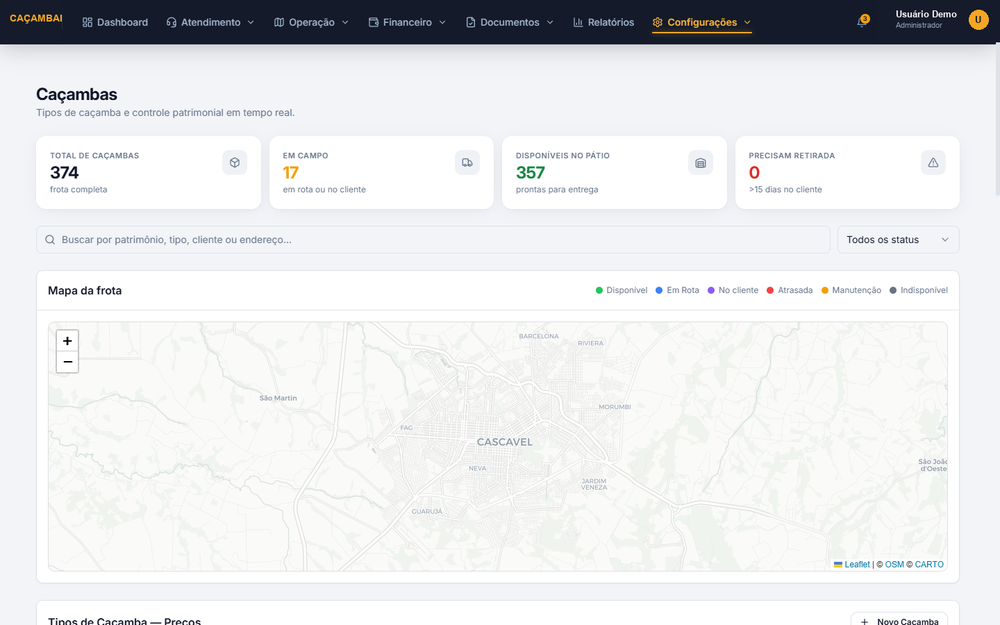
Cada caçamba é tratada como um patrimônio: total da frota, quantas estão disponíveis, em uso ou precisando de manutenção — com mapa de localização e cadastro por tipo e tamanho.
Tudo o que você viu até aqui faz parte de um ambiente real, configurado para uma empresa do setor. É exatamente assim que funciona o CaçambAI: cada cliente recebe o seu próprio ambiente, completamente isolado, com a identidade visual e as regras da sua empresa.
"Cada operação tem o seu jeito de funcionar — o sistema é que se adapta a ele, não o contrário."
Antes de começar, mapeamos junto com você: o fluxo de atendimento, os tipos de caçamba e locação, as regras fiscais e financeiras, e a forma como o seu motorista trabalha hoje. A partir disso, configuramos o CaçambAI para refletir exatamente a sua rotina — sem te obrigar a se adaptar a um sistema genérico.
Além das telas que você viu, o CaçambAI já conta com módulos adicionais — e novos módulos podem ser desenvolvidos sob medida conforme a sua necessidade.
Programação do dia, execução de entregas/retiradas e atualização de status direto do celular, com geolocalização no momento da ação.
Geração e assinatura do Manifesto de Transporte de Resíduos vinculado a cada pedido, dentro do fluxo operacional.
Envio de mensagens de cobrança e avisos de vencimento para clientes inadimplentes, com modelos de mensagem configuráveis.
Funil de oportunidades para acompanhar potenciais clientes, do primeiro contato até a conversão em cliente ativo.
Conciliação financeira a partir de extratos bancários, com categorização e vínculo automático com faturas e boletos.
Relatórios de faturamento, produtividade da frota e indicadores específicos da sua operação, criados conforme a sua necessidade de gestão.
O próximo passo é simples: uma conversa para entender a sua operação, mapear o que pode ser personalizado e te mostrar, na prática, o sistema funcionando com a cara da sua empresa.